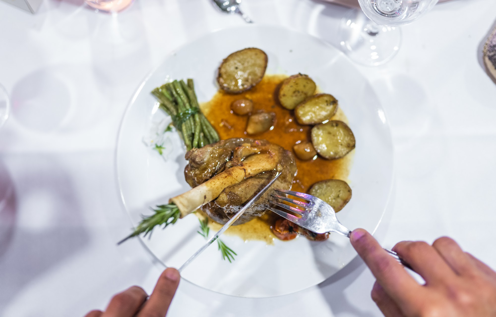
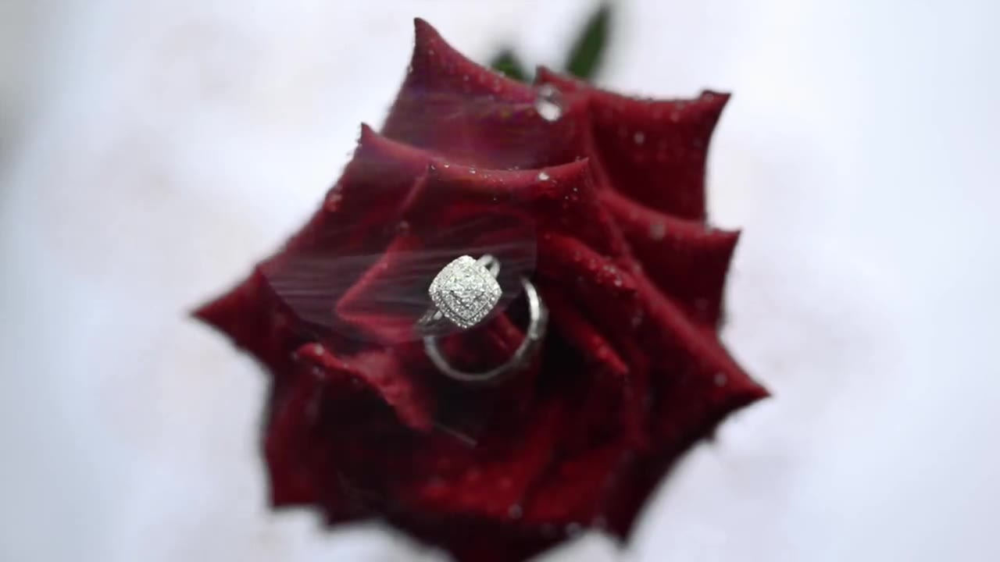
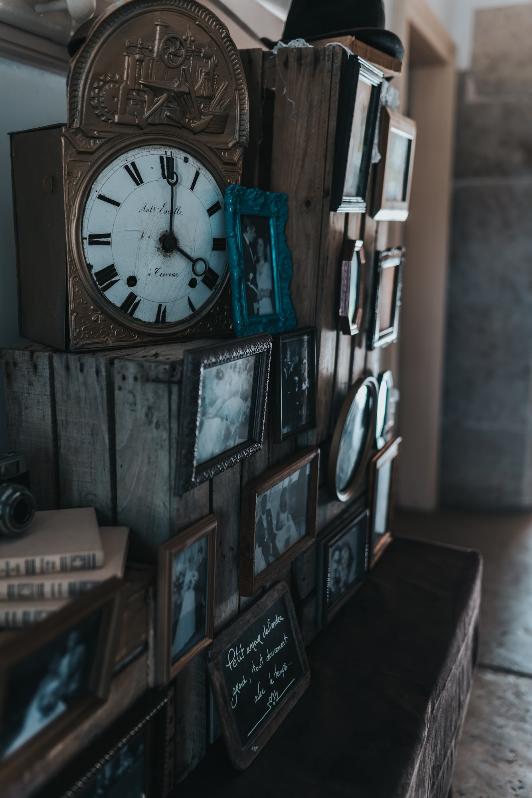
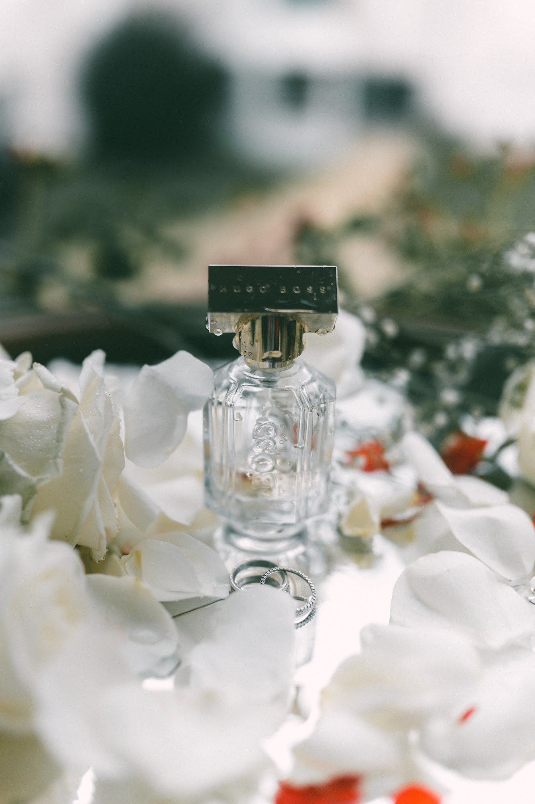

Shooting produit e-commerce : fond blanc ou mise en scène ?
Quand on lance ou développe une boutique en ligne, la question visuelle se pose immédiatement. Faut-il miser sur un packshot épuré sur fond blanc ou sur une mise en scène travaillée avec des textures et de la lumière naturelle ? En tant que photographe produit à Lyon, je constate chaque jour que ces deux approches répondent à des objectifs très différents mais complémentaires.

Le packshot sur fond blanc : la clarté avant tout
Le fond blanc reste le standard incontournable pour les plateformes e-commerce et les catalogues en ligne. Sa force réside dans sa simplicité : l'attention du visiteur est focalisée à cent pour cent sur l'objet, ses détails, ses finitions et sa matière.
Pour une photo e-commerce efficace, la précision technique est primordiale. Il faut gérer les reflets sur le verre, restituer fidèlement les couleurs d'un tissu et faire ressortir la texture exacte d'un flacon sans distorsion. C'est l'outil parfait pour rassurer l'acheteur et réduire le taux de retour.

La mise en scène : raconter une histoire et créer le désir
Si le fond blanc informe, la mise en scène séduit. En intégrant des éléments de décor, des matières brutes ou des jeux d'ombres, on ne montre plus seulement un produit : on propose un univers, un style de vie et une émotion.
Dans le secteur de la photo cosmétique ou de la décoration, une mise en scène réussie valorise les ingrédients, évoque un rituel de soin ou transporte directement le client chez lui. La lumière naturelle et les compositions texturées créent un lien immédiat avec votre audience sur les réseaux sociaux et la page d'accueil de votre site.

Comment choisir l'approche idéale pour votre marque à Lyon

Le choix dépend avant tout du canal de diffusion et du positionnement de votre marque. Pour une fiche produit Amazon ou un catalogue de revendeur, le fond blanc s'impose par sa neutralité et son uniformité.
En revanche, pour une campagne de marque, une bannière de site web ou des publications Instagram, la mise en scène lifestyle est indispensable. Elle apporte de la chaleur, affirme votre identité visuelle et vous démarque de la concurrence.
Combiner les deux styles pour une stratégie visuelle complète
Les marques les plus performantes ne choisissent pas : elles associent les deux formats. La mise en scène attire l'œil sur la bannière principale ou les réseaux sociaux, puis le packshot prend le relais sur la fiche article pour déclencher l'acte d'achat.
En studio ou en extérieur dans la région lyonnaise, entre le Beaujolais et les Monts d'Or, nous pouvons planifier une séance mixte. Cela permet d'optimiser le temps de prise de vue et d'obtenir l'ensemble des contenus nécessaires pour vos campagnes digitales et imprimées.

L'importance de la lumière et de la texture en photo produit

Qu'il s'agisse d'un objet en verre, d'un soin visage ou d'une pièce d'artisanat, la lumière façonne le rendu final. Travailler en lumière naturelle apporte une douceur authentique qui valorise les matières sans dénaturer le produit.
Chaque détail compte : le grain d'un papier, le brillant d'un flacon ou le reflet d'une dorure. Mon rôle est de capter ces nuances avec discrétion et précision pour donner du relief à vos créations.
Questions fréquentes
Faut-il privilégier le fond blanc ou la mise en scène pour débuter une boutique e-commerce ?
Pour lancer une boutique en ligne, commencez par des packshots nets pour vos fiches produits afin d'assurer une expérience d'achat claire. Complétez ensuite avec quelques visuels mis en scène pour votre page d'accueil et votre communication.
Où se déroule la séance de shooting produit près de Lyon ?
Le shooting peut avoir lieu dans mon studio près de Lyon, dans vos locaux professionnels ou dans un décor naturel sélectionné selon l'univers de votre marque dans le Rhône et la région.
Proposez-vous également la réalisation de vidéos de présentation produit ?
Oui, je réalise des courtes vidéos cinématiques et des teasers courts pour mettre en mouvement vos produits, parfaits pour les réseaux sociaux et les bannières web.
Comment préparer mes produits avant la séance photo ?
Sélectionnez des exemplaires impeccables, sans rayure ni défaut d'emballage. Nettoyez soigneusement les surfaces vitrées ou métalliques et prévoyez des emballages de secours en cas de besoin.
Discutons de votre projet visuel et créons ensemble les images qui valoriseront votre marque près de Lyon.
Parlons de votre projet